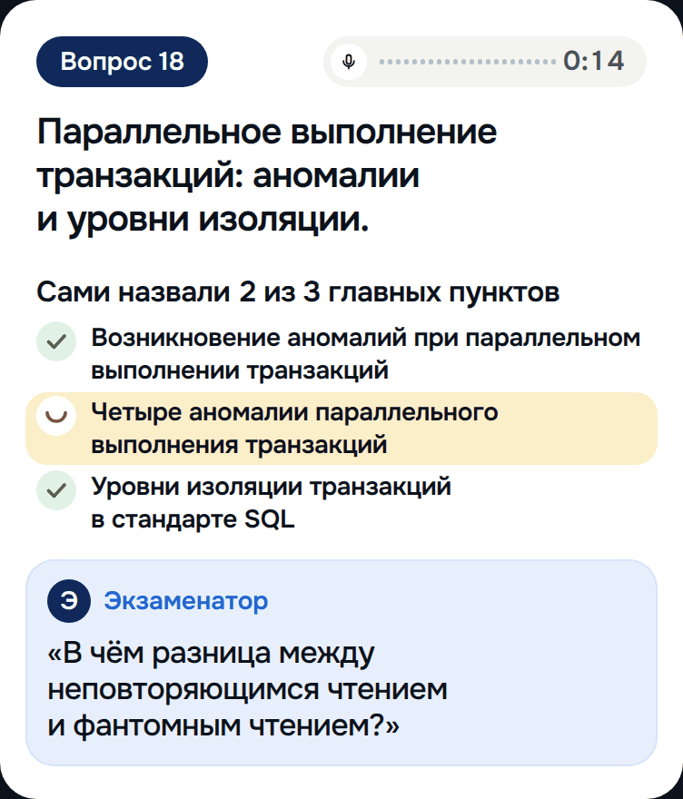

Титульный
CodingFest-11
Meldy
Конспекты из лекций
Подготовка к экзамену
Конструктор тестов
Контрольные по ссылке
Подготовка к экзамену
Конструктор тестов
Контрольные по ссылке
Номинация
Образование, культура

Здравствуйте. Наш проект называется Meldy. В нём четыре части. Лекции, экзамены, конструктор тестов и контрольные. Из лекции Meldy делает конспект, карточки, самопроверку и подкаст. По вопросам кафедры составляет план до экзамена и проверяет ответы вслух. В конструкторе преподаватель собирает свой тест. А потом даёт его группе как контрольную, по ссылке или игрой на паре. Справа ответ вслух на вопрос билета. Meldy отмечает названные пункты, а о неполном переспрашивает, как экзаменатор. Докладчику: показ запускается клавишей F5.